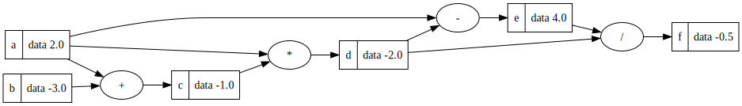

[1]:
# install requirement packages
%pip install graphviz
# remember to install graphviz on you computer also: https://graphviz.org/download/
Collecting graphviz
Using cached graphviz-0.20.1-py3-none-any.whl (47 kB)
Installing collected packages: graphviz
Successfully installed graphviz-0.20.1
[notice] A new release of pip is available: 23.1.2 -> 23.2.1
[notice] To update, run: pip install --upgrade pip
Note: you may need to restart the kernel to use updated packages.
[1]:
import math
from graphviz import Digraph
class Value:
def __init__(self, data, _parents=(), _operator='', label=''):
self.data = data
self._prev = set(_parents)
self._op = _operator
self.label = label
def __repr__(self):
return f"Value(data={self.data})"
def __add__(self, other):
return Value(self.data + other.data, (self, other), '+')
def __mul__(self, other):
return Value(self.data * other.data, (self, other), '*')
def __sub__(self, other):
return Value(self.data - other.data, (self, other), '-')
def __truediv__(self, other):
if other.data == 0: # Division by zero check
raise ValueError("Division by zero is not allowed")
return Value(self.data / other.data, (self, other), '/')
[2]:
def trace(root):
# builds a set of all nodes and edges in a graph
nodes, edges = set(), set()
def build(v):
if v not in nodes:
nodes.add(v)
for child in v._prev:
edges.add((child, v))
build(child)
build(root)
return nodes, edges
def draw_dot(root):
dot = Digraph(format='svg', graph_attr={'rankdir': 'LR'}) # LR = left to right
nodes, edges = trace(root)
for n in nodes:
uid = str(id(n))
# for any value in the graph, create a rectangular ('record') node for it
dot.node(name=uid, label=f"{{ {n.label} | data {n.data:.1f} }}", shape='record')
if n._op:
# if this value is a result of some operation, create an op node for it
dot.node(name=uid + n._op, label=n._op)
# and connect this node to it
dot.edge(uid + n._op, uid)
for n1, n2 in edges:
# connect n1 to the op node of n2
dot.edge(str(id(n1)), str(id(n2)) + n2._op)
return dot
[3]:
a = Value(2, label='a')
b = Value(-3, label='b')
c = a + b; c.label='c'
e = a * c; e.label = 'e'
d = a - e; d.label = 'd'
draw_dot(d)
[3]:

[54]:
trace(e)
[54]:
({Value(data=-1), Value(data=-2), Value(data=-3), Value(data=2)},
{(Value(data=-1), Value(data=-2)),
(Value(data=-3), Value(data=-1)),
(Value(data=2), Value(data=-1)),
(Value(data=2), Value(data=-2))})
[22]:
d = float(12)
type(d)
[22]:
float
[58]:
abs(-12)
[58]:
12
[57]:
---------------------------------------------------------------------------
TypeError Traceback (most recent call last)
Cell In[57], line 1
----> 1 len(3)
TypeError: object of type 'int' has no len()
[ ]: